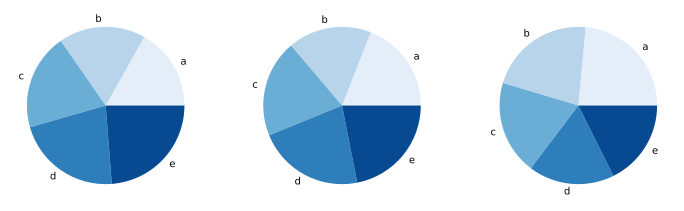
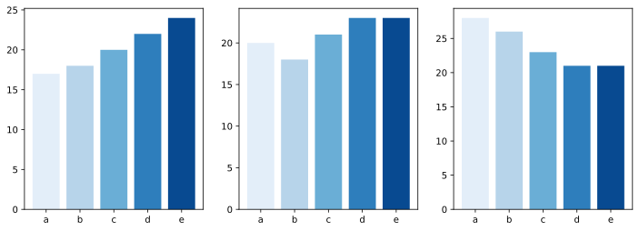
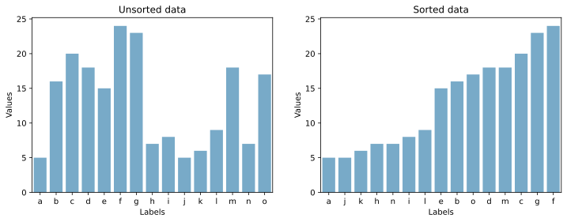
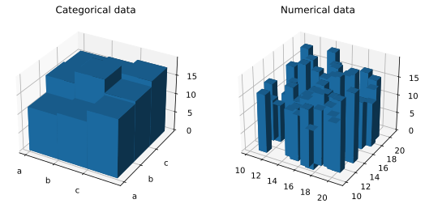
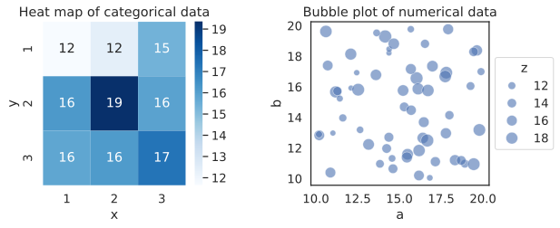

5. DO’s and DON’Ts of data visualization#
As there are many ways to visualize data, there are also many things that can go wrong during that process. In this chapter we selected a few examples of practices that you should avoid when working with your own data to make the story you are trying to tell clearer and more explicit.
5.1. Environment setup#
5.2. Pie charts#
Pie charts are sometimes used to represent compositional data (ratios). However, pie charts can be difficult to accurately interpret as human eyes are not particularly good at reading angles. Look at the three pie charts below and try to answer the following questions:
which category (a-e) represents the largest fraction of the data in each plot?
in which of the three plots does the c category represent the highest fraction fo samples?
in each of the plots, can you order the categories from the one comprising the lowest fraction of the data to the one representing the highest one?

Not so easy to tell them apart, is it? There is, however, a much better way of visualizing the same data that will help us answer all of the questions posed above - a bar chart. Below you can see the same data visualized using bars instead of pie slices. Can you now try to answer the same questions about this dataset?

5.3. Sorting the data#
When using bar charts, we often first input the data to the plotting function as-is, without thinking much about the order of the categories on the resulting plot. While there is nothing particuarly wrong with doing that, it may be better to put some thought into the story you want to tell through that bar chart - often we are interested in identifying the category with the largest/smallest value(s). In such cases, you should sort the data points to order the categories by value and make it much easier to identify the interesting poinst.
Warning
Note: Never re-order an axis if it represents temporal values! It will only make the plot look more confusing. After all, we are very used to seeing May follow April, but not July follow November.

5.4. Overplotting#
Imagine you have a dataset with thousands of points. The intuition probably tells you to just take all of them and plot them directly. While there may be applications where it is useful or even necessary, it may also lead to hiding important information or even misinterpretation of the data.
Below you will see a plot where three different datasets, each comprising 7500 points, were plotted simultaneously. While you can see the general “shape” of the data, can you tell exactly where points belonging to one dataset end and the other ones begin?

There are a few techniques that you may use to make the differences between the datasets more obvious:
decrease point size
increase point transparency
color points belonging to different groups using different colors
subsampling datasets
combinations of the above
See below for examples of each of those techniques and how they make the data more readable:

See also
If you want to learn more about how to deal with overplotting, check out this resource.
5.5. 3D plots#
3D plots are a great tool to interactively explore datasets with more than 2 variables. They allow you look at the data from different angles and zoom into areas where you need more resolution. However, when you project a 3D plot onto a 2D surface, i.e.: you fix the axes at certain angles and remove the interactivity, you may cause some data points to disappear from view, thereby potentially leading to plot misinterpretation.
Below you will see two 3D bar charts which have the interactivity removed - notice, how some bars are smaller than other ones and how, at this angle, it is nearly impossible to tell which values they correspond to.

Fortunately, there are other kinds of visualizations that can help you plot the same data without the risk of misrepresenting anything. If your data are mostly categorical (like in the bar chart on the left), you can substitute the bar char with a simple heatmap. Similarly, for numerical data you can use a bubble plot (a scatter plot with point size representing the 3rd dimension). Both of those plot types were discussed in chapter 2.
